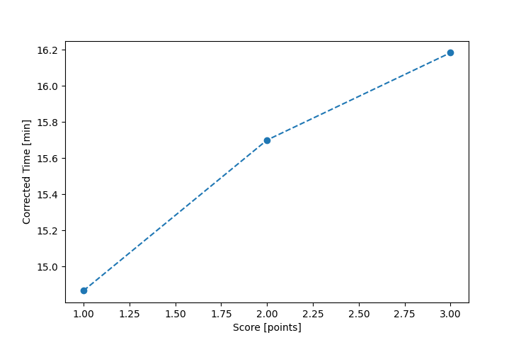

| Wind: | 2-3 (BFT) |
|---|---|
| RC: | Rod_HDavid_G |
| Date: | June 16, 2019 |
| Notes: | M2 |
| Rank / Score | Name | Boat | Input Time [mm:ss] | Input Offset [mm:ss] | Race Time [mm:ss] | Race Time [s] | Handicap | Corrected Time [s] | Corrected Time [mm:ss] |
|---|---|---|---|---|---|---|---|---|---|
| 1.0 | Mike_F | SF | 54:41 | 00:00 | 54:41 | 3281 | 1.00400 | 3268 | 54:28 |
| 2.0 | Ron_F | F5 | 58:30 | 00:00 | 58:30 | 3510 | 0.96600 | 3634 | 60:34 |
| 3.0 | John_T | US-1 | 56:12 | 00:00 | 56:12 | 3372 | 0.91300 | 3693 | 61:33 |
| 4.0 | Bill_P | SF | 65:15 | 00:00 | 65:15 | 3915 | 1.00400 | 3899 | 64:59 |
| 5.0 | Chris_E | SF | 67:28 | 00:00 | 67:28 | 4048 | 1.00400 | 4032 | 67:12 |
| 6.0 | Nick_H | SF | 70:22 | 00:00 | 70:22 | 4222 | 1.00400 | 4205 | 70:05 |
| 7.0 | David_Bu | SF | 71:04 | 00:00 | 71:04 | 4264 | 1.00400 | 4247 | 70:47 |
| 8.0 | Nedra_F | SF | DNF | -- | -- | -- | -- | -- | DNF |

Application Notes:
All race results are unofficial
View source code at https://github.com/cessnao3/portsmouthracecalc/